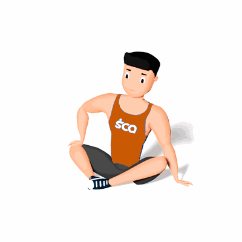

Alongamento Borboleta com Rotação de Tronco

O exercício irá trabalhar a mobilidade dos músculos internos da coxa, auxiliando nas atividades do dia a dia e atividades físicas.
Ficha Técnica
Tipo: Alongamento
Grupo Muscular: Perna
Aparelho: Nenhum
Músculos: Nenhum
Como realizar
- Sente-se no chão;
- Dobre as pernas de forma que uma sola do pé encoste na outra e fique com a coluna ereta;
- Coloque a mão direita sobre o joelho direito e empurre para baixo, ao mesmo tempo gire o tronco para esquerda esticando ao máximo o corpo;
- Mantenha nessa posição por alguns segundos e retorne a posição inicial;
- Repita os movimentos para o outro lado.
 RC STORE
RC STORE